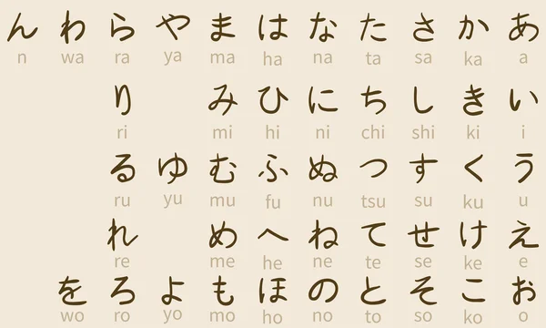
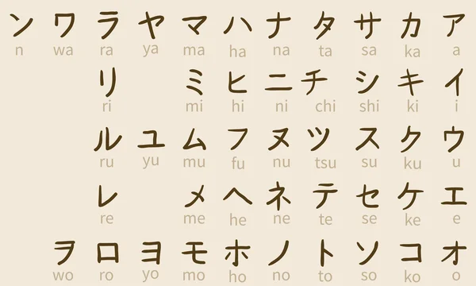

Japans wordt door ongeveer 128 miljoen mensen gesproken, voornamelijk door Japanners en voornamelijk in Japan, het enige land waar het de nationale taal is. Japans behoort tot de Japanse of Japans-Ryukyuan taalfamilie. Er zijn veel pogingen gedaan om de Japanse talen te groeperen met andere families, zoals de Ainu, Austroaziatische, Koreaanse en de nu in diskrediet gebrachte Altaïsche taal, maar geen van deze voorstellen heeft brede acceptatie gekregen.
Hiragana
Hiragana wordt gebruikt voor woorden zonder kanji-weergave, voor woorden die niet langer in kanji zijn geschreven, voor vervanging van zeldzame kanji die de beoogde lezers misschien niet kennen, en ook voor het volgen van kanji om vervoegingsuitgangen weer te geven. Vanwege de manier waarop werkwoorden (en bijvoeglijke naamwoorden) in het Japans worden vervoegd, kan kanji alleen de Japanse tijd en stemming niet volledig overbrengen, aangezien kanji niet onderhevig kan zijn aan variatie wanneer het wordt geschreven zonder hun betekenis te verliezen. Om deze reden wordt hiragana toegevoegd aan kanji om vervoegingen van werkwoorden en bijvoeglijke naamwoorden weer te geven. Hiragana die op deze manier wordt gebruikt, wordt okurigana genoemd. Hiragana kan ook worden geschreven in een superscript genaamd furigana boven of naast een kanji om de juiste lezing te tonen. Dit wordt gedaan om het leren te vergemakkelijken, maar ook om bijzonder oude of obscure (of soms verzonnen) lezingen te verduidelijken.

Katakana
Katakana is een Japans lettergreepschrift, een onderdeel van het Japanse schrift, samen met hiragana, kanji en in sommige gevallen het Latijnse schrift (bekend als rōmaji). Het woord katakana betekent "fragmentarische kana", aangezien de katakana-tekens zijn afgeleid van componenten of fragmenten van complexere kanji. Katakana en hiragana zijn beide kana-systemen. Op een of twee kleine uitzonderingen na, wordt elke lettergreep (strikt mora) in de Japanse taal vertegenwoordigd door één teken of kana in elk systeem. Elke kana vertegenwoordigt ofwel een klinker zoals "a" (katakana ア); een medeklinker gevolgd door een klinker zoals "ka" (katakana カ); of "n" (katakana ン), een nasaal sonorant dat, afhankelijk van de context, klinkt als de Engelse m, n of ng ([ŋ]) of als de nasale klinkers van het Portugees of Galicisch.

Kanji
Kanji zijn de logografische Chinese karakters die zijn ontleend aan het Chinese schrift en worden gebruikt in het schrijven van Japans. Ze maakten een belangrijk deel uit van het Japanse schrift in de tijd van het Oud-Japans en worden nog steeds gebruikt, samen met de later afgeleide syllabische scripts van hiragana en katakana. De karakters hebben Japanse uitspraken; de meesten hebben er twee, waarvan er één is gebaseerd op het Chinese geluid. Een paar karakters zijn in Japan uitgevonden door karaktercomponenten te construeren die zijn afgeleid van andere Chinese karakters. Na de Tweede Wereldoorlog deed Japan zijn eigen pogingen om de karakters, nu bekend als shinjitai, te vereenvoudigen door een proces dat vergelijkbaar is met de vereenvoudigingsinspanningen van China, met de bedoeling de geletterdheid onder het gewone volk te vergroten. Sinds de jaren 1920 heeft de Japanse regering periodiek karakterlijsten gepubliceerd om de opleiding van haar burgers te helpen sturen door middel van de talloze Chinese karakters die er zijn. Er worden bijna 3.000 kanji gebruikt in Japanse namen en in gewone communicatie. Er bestaan meer dan 50.000 kanji maar erg hoogopgeleide Japanners kennen er ca. 4000. Officieel is het aantal teruggedrongen tot 2136 stuks